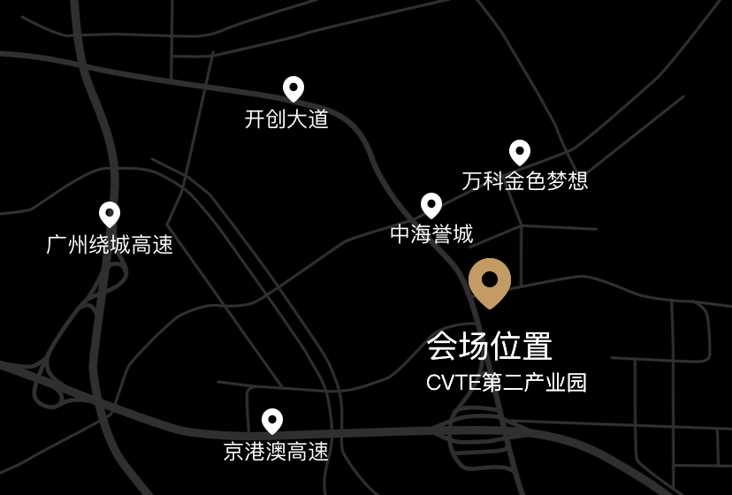

2016年即将过去，作为国家教育信息化十年发展规划的第六个年头，国家政策的支持、需求的增加促使信息化教育装备市场步入了一个高速发展的时代。目前中国教育信息化已经有了长足发展，城乡信息化教育差距却仍然较大，虽然有社会各界的支持，但农村教育信息化进程仍有待进一步推进。
希沃不断进取以推动教育事业持续发展
希沃（seewo）品牌从2009年正式面世以来，就一直努力为中国教育事业提供优质的产品与服务。为了成为全球人机交互领域的知名品牌，希沃进行了长期而踏实的品牌建设。2014年希沃发布子品牌“希沃易+”，向智慧校园整体解决方案供应商全面转型，真正告别了传统只卖硬件的模式。希沃（seewo）不仅长期专注于产品的性能研究，更是深入挖掘一线教师的需求，自主研发了一系列切合教师教学的应用软件及完整的教学解决方案。

“希沃2016公益行”助力农村教育信息化建设
从2012年教育部颁布了“教育信息化十年发展规划”以来，社会各界对此非常关注，并给予极高的热情。据搜狐教育《从公益支教看农村教育信息化的解决之道》报道，教育信息化已成为解决农村教育资源匮乏，保障农村义务教育水平的有效途径，推进农村教育信息化成为了整个教育信息化进程中的重要组成部分。
作为一家有爱心、有社会责任感的智慧校园整体解决方案提供商，希沃（seewo）今年走访了一些中国乡村小学，了解到的情况令人颇为担忧。国家教育信息化十年发展规划已进入第六个年头，仍有部分乡村学校教学设施落后。据希沃（seewo）走访人员反馈：“我们都知道粉笔灰尘的颗粒，对老师的身体健康有极大的伤害。但就在广东的一所教学点，为了能多写几个字，这里的老师们连粉笔头都舍不得扔。”这些乡村学校的学生大多是留守儿童，他们缺乏父母的照顾，更缺乏与外界的接触。